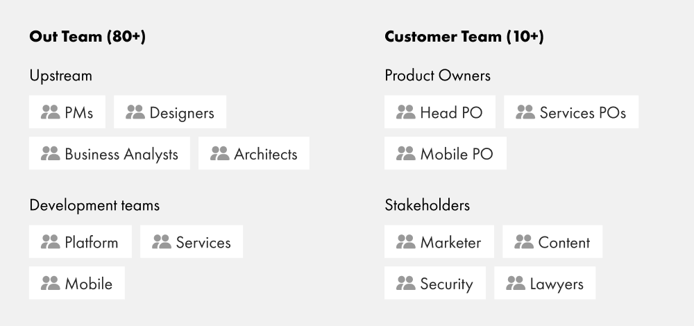
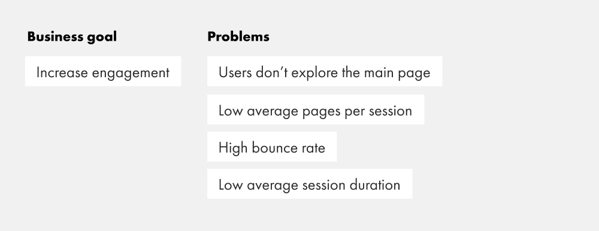
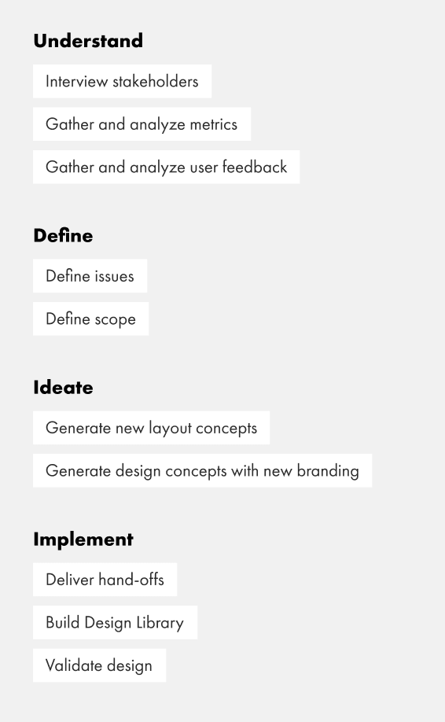
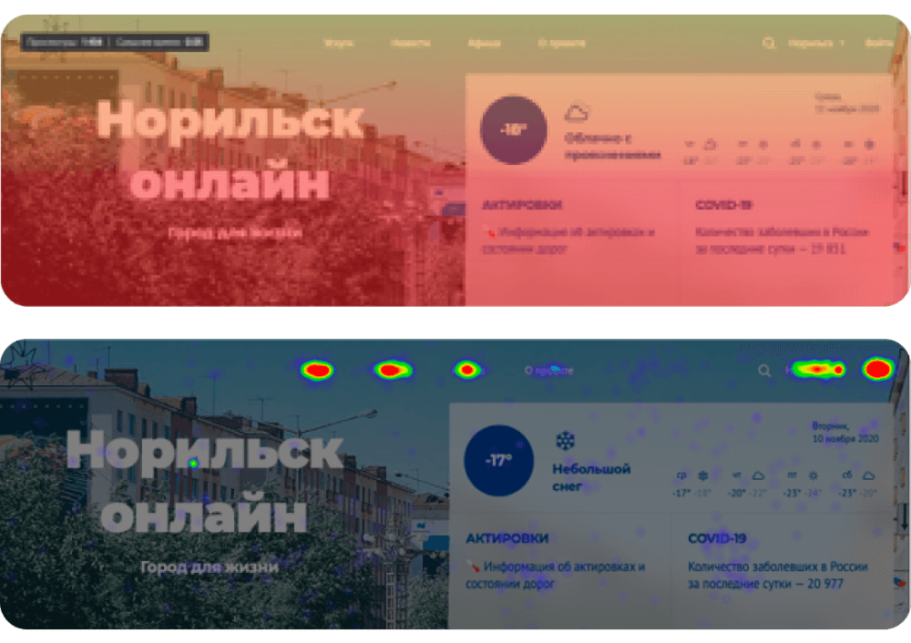
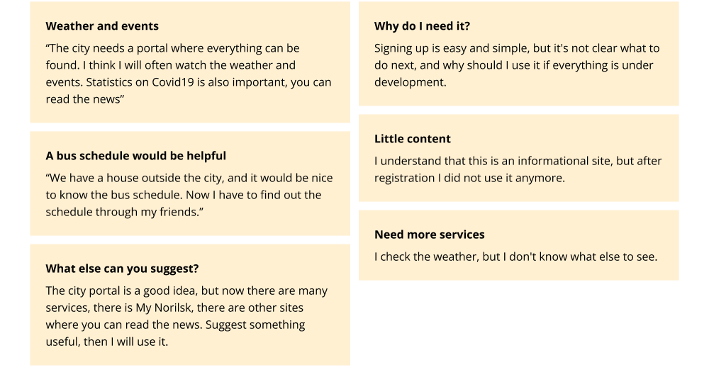
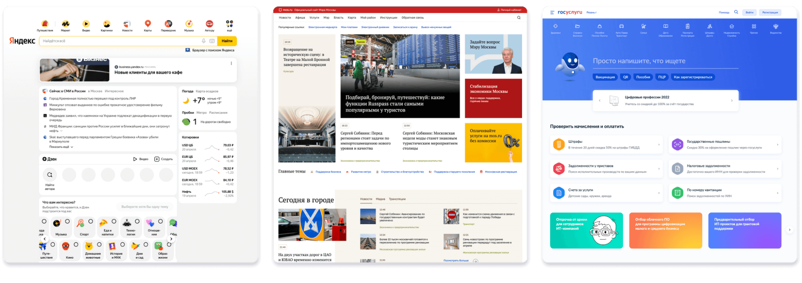
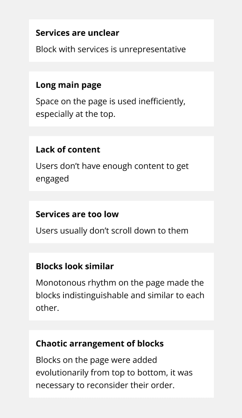
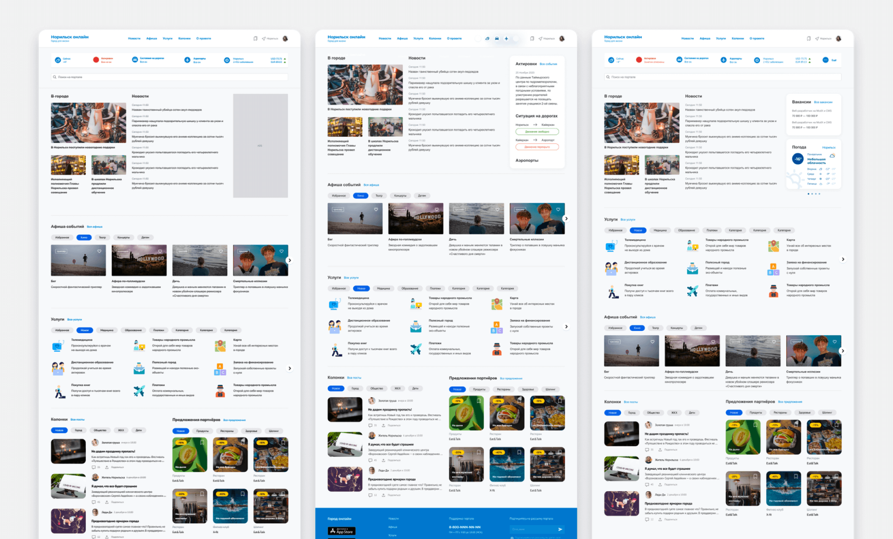
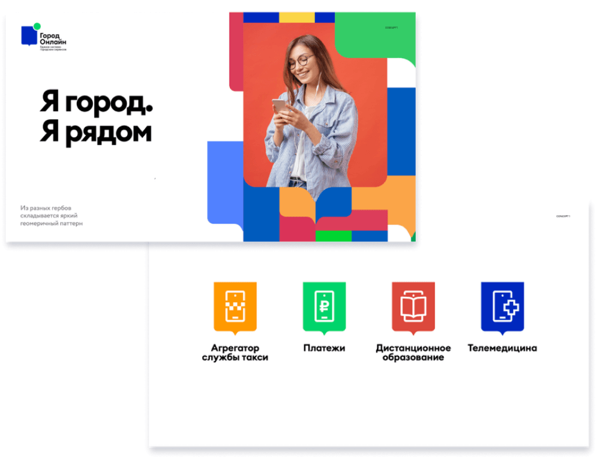

Transformation of the city portal
Background
Norilsk Nickel is the world’s largest producer of nickel and palladium, as well as a city-forming enterprise. Most of the inhabitants of Norilsk are employees of this company. Life in northern cities is fraught with difficulties, citizens live in extreme weather conditions, where temperatures in winter can drop to −40 ° C and it affects their way of life.In such low temperatures, schools are moving to remote work, and roads to the airport can be closed in case of a snowstorm.
Norilsk Nickel came up with the idea to create an aggregator of online services for residents of northern cities in order to improve the quality of life of citizens by providing various online services — from telemedicine to distance education.
So the city portal got off to a fast start and launched an MVP with a couple of services. The portal had been in operation for a year when it was decided that it needed to be revised.
Team
Customer Team
The client’s team consisted of product owners and stakeholders responsible for specific things such as market research, legal and security consulting. Each product owner was responsible for a specific service area such as education, telemedicine, entertainment, etc.
Out Team
Development teams were responsible for different areas. One of them was engaged in the development of platform functions that influenced the operation of the entire portal, the other worked on a mobile application.
While Upstream was responsible for providing development-ready requirements and layouts. It included project managers, architects, business analysts and designers.


Goals
After conducting interviews with stakeholders and product owners, the design team discovered that the main problem was that users were hardly exploring the homepage and the site itself. We had to figure out why this was happening and come up with a solution.
After several iterations of meetings, we determined the main goal of the redesign was to increase user engagement on the home page. And the metrics to measure this were as follows:
- Average number of pages per session.
- Bounce rate.
- Average session duration.
💡Note
Redesign was carried out for the entire portal, but the main emphasis was placed on the main page as the most informative.
Process
To achieve our goal, we decided to follow a pretty standard design process:
-
Understand
First, we study the problem and collect all available input information.
-
Define
Then we identify the issues that we would like to focus on.
-
Ideate
In the next step, we generate ideas to resolve the issues.
-
Implement
And last but not least we deliver the final result, test it and make it scalable by setting up the library.


Metrics
We started our research with the metrics that data analysts provided us with and the picture was not that appealing.
Scrolling Statistics
The statistics of the amount of scrolling on the main page show that users would not scroll down and explore the content.
Click Maps
Users would mostly engage with the menu at the top, but wouldn’t explore the page itself.
Feedback
We also collected user feedback, and the summarized comments were as follows:
- Useful widgets for weather, school restrictions and news.
- Not enough services
- Not enough content.

Competitor analysis
We conducted a competitor analysis to determine the main characteristics and the way blocks are placed on the main pages. We used the main city portals and public service aggregators as key links.


Issues Coverage
Having performed the research, we decided to focus on the following issues:
Long main page
The first screen was rather impractical, the only interactive elements were in the menu. A huge part of it was the background image. The overall page was rather large, one block could fill the entire screen, and the user had to scroll the page a lot to see the content. Lots of unnecessary blocks and banners.
Chaotic order of blocks
The main page had been developing evolutionary, so the order of blocks had never been analysed.
Lack of content
There are not so many things to interact with if you don’t have enough content to engage with.
Blocks look similar
News, services, events and live streams look the same — square tiles. This view created a monotonous grid, and users couldn’t tell they were looking at different types of content.
Services are unclear
Service cards took up a lot of space and did not look attractive.
Services are too low
Even though this block is the essence of the website somehow it ended up in the middle of the page, where the users wouldn’t even scroll down to.
Card Sorting
In order to prioritise the blocks of the main page, we approached a card sorting method. We asked a focus group to rate how valuable the current blocks of the main page are.
Having collected these insights we were able to move forward to the next step — building the informational architecture for the main page.

Layout Concepts
At this stage, we started to generate ideas of what information architecture and low-fidelity layouts might look like. We have created more than 20 different concepts, not only static, but also interactive prototypes. After several iterations, we agreed on one of them with the customer and started working on the visual side.

High fidelity variants based on corporate identity
While we were researching and working on the layout concept, another contractor prepared new branding that we had to implement into the portal design.
The main idea behind this branding was that it should be bright and eye-catching, and should reflect the lifestyle of modern citizens who are connected to technology and online services.
But it turned out that on the basis of this corporate identity is not easy to build an interface and pick up the UI.
Colored bars and coats of arms looked good on large elements: patterns, large pictures, in social networks. But on the portal, where there are a lot of small elements, panels, navigation, this style strongly interfered. We felt it ourselves, it was confirmed by the customer, and it was confirmed by surveys within the company.
Below are various trial options for implementing this style on the platform.

Final version
In the end, it was decided to soften the colors because they were too bright and distracting. We started to use the coat of arms as a graphic element on banners situationally.
In the process of demonstrations and discussions, we also adjusted the original prototype by simplifying and changing some mechanics.
I contributed to the design of the top of the home (menus, widgets, services), banner design, opinions, poster, and some others.
I participated in the design of the rest of the blocks consultatively, during the design review.